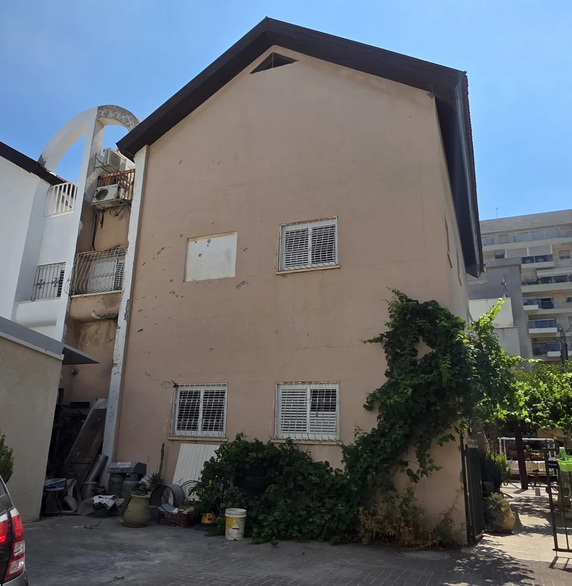
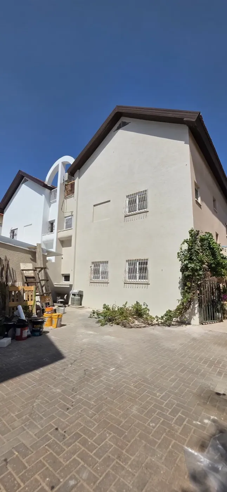
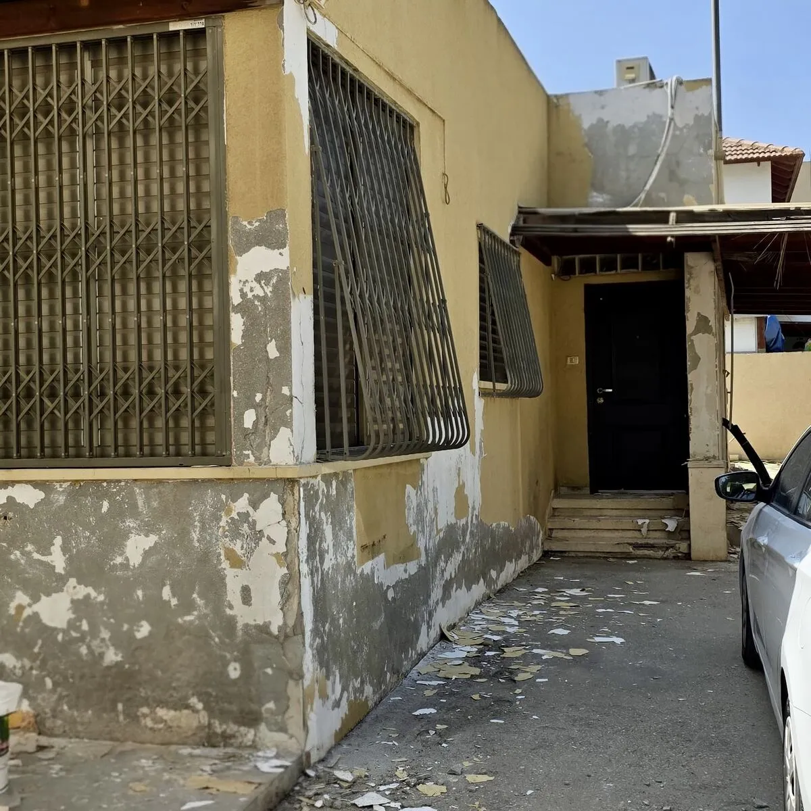
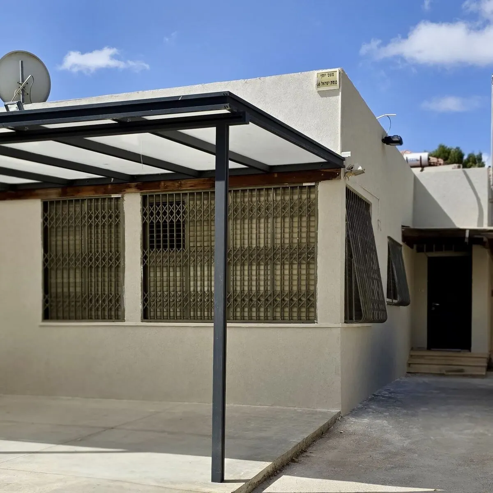

בניינים משותפים ובתים פרטיים
חידוש חזית לבניין משותף, לווילה או לבית פרטי, כולל תיאום מול הנציגות או בעלי הבית וליווי עד מסירה.
שליכט צבעוני, צביעה חיצונית, חיפויי אבן ואיטום. מראה חדש למבנה, עם מינימום הפרעה לדיירים.
חזית מתקלפת, סדוקה או דהויה פוגעת במראה הבניין, בערך הנכס, ולעתים גם מכניסה רטיבות פנימה.
אנחנו מבצעים חידוש מלא של חזית המבנה, מהבדיקה הראשונית ועד הגימור, עם ליווי צמוד לאורך כל הפרויקט.
חידוש חזית לבניין משותף, לווילה או לבית פרטי, כולל תיאום מול הנציגות או בעלי הבית וליווי עד מסירה.
חידוש חזית למלונות, משרדים, מרכזים מסחריים ומוסדות, בתיאום שמאפשר להמשיך לפעול כרגיל.
קבלן מעטפת אחד שמטפל בחזית מתחילתה ועד סופה, ברמת גימור קבועה.
שכבת גמר עמידה ואסתטית שמעניקה לבניין מראה חדש לאורך שנים.
צביעת קירות חוץ בחומרים עמידים לשמש ולגשם.
הוספת חיפויי אבן לפי בחירה, וחיזוק ועיגון של לוחות אבן קיימים.
פתרונות איטום המותאמים לשיטת הבנייה, עם אחריות לרטיבות חוזרת.
סנפלינג, במות הרמה ופיגומים, לפי מה שנכון לכל מבנה.
בסיום העבודה השטח נשאר נקי ומסודר.
מגיעים לבניין, בודקים את מצב החזית ומבינים מה הצרכים והאפשרויות.
מקבלים הצעה ברורה, עם פירוט העבודות והחומרים, ללא עלות וללא התחייבות.
עוזרים לכם לבחור את הגימור הנכון, ומציגים את האפשרויות לנציגות או לבעלי הבית.
עבודה בשיטת הגישה המתאימה למבנה, בהקפדה על בטיחות ועל מינימום הפרעה לדיירים.
בדיקה סופית יחד אתכם, מסירה מסודרת ואחריות על העבודה.
תוצאות אמתיות מעבודות שביצענו

לפני
אחריחידוש חזית לבית פרטי

לפני
אחריחידוש קירות חיצוניים
מלאו את הטופס ונחזור אליכם תוך 24 שעות, ללא התחייבות.
המחיר תלוי בגודל המבנה, בגובה, במצב הקיים ובחומרים שנבחרים. לאחר בדיקה בשטח נגיש הצעת מחיר מפורטת, ללא עלות וללא התחייבות.
שליכט צבעוני הוא שכבת גמר דקורטיבית עבה יותר, שעמידה לאורך שנים ומסתירה פגמים קטנים בקיר. צבע חיצוני זול יותר וקל לחדש אותו בעתיד. בסיור בשטח נמליץ על הגימור שמתאים למצב הקיר ולתקציב.
כן. לפני הגימור אנחנו מטפלים בסדקים ובנקודות רטיבות בקיר, כדי שהחזית החדשה תיראה טוב ותחזיק לאורך זמן.
סנפלינג (עבודת חבל) מאפשר להגיע לכל נקודה בחזית בלי להקים פיגום, ומתאים במיוחד לתיקונים נקודתיים, לאיטום ולעבודות בגובה רב. פיגום מתאים יותר לעבודות נרחבות וממושכות על כל החזית, כמו חידוש שליכט או החלפת חיפוי. בכל פרויקט אנחנו בוחרים את שיטת הגישה שמתאימה לו: סנפלינג, במת הרמה או פיגום.